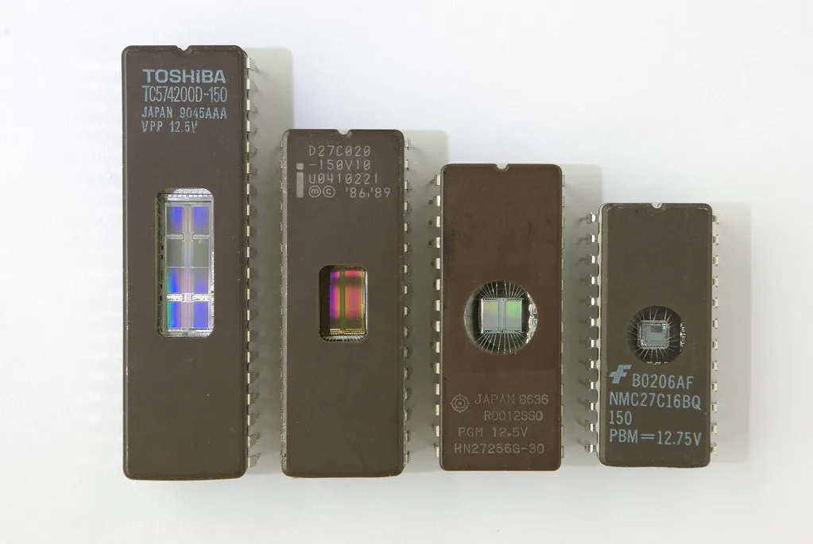

마이크론 '어닝 서프라이즈'에 삼전·SK하이닉스 동반 반등…코스피 밀어올려
미국 메모리 반도체 기업 마이크론테크놀로지가 인공지능(AI) 데이터센터 수요에 힘입어 사상 최대 분기 실적을 발표했다. 마이크론의 2026 회계연도 4분기(6~8월) 매출은 542억3000만달러로 전년 동기 대비 약 379% 급증했으며, 시장 예상치였던 510억7000만달러를 크게 웃돌았다. 조정 주당순이익(EPS) 역시 33.42달러를 기록해 시장 전망치 31.61달러를 넘어섰다. 이 같은 '어닝 서프라이즈'는 AI 서버 투자 확대에 따른 메모리 수요 급증이 실적에 그대로 반영된 결과로 풀이된다.
마이크론의 호실적 발표 이후 국내 반도체 대형주인 삼성전자와 SK하이닉스 주가가 동반 반등하는 모습을 보였다. 글로벌 메모리 반도체 시장의 풍향계 역할을 해온 마이크론의 실적이 예상을 뛰어넘은 만큼, 국내 투자자들 사이에서도 메모리 업황 회복에 대한 기대감이 한층 커졌다는 분석이 나온다. 삼성전자와 SK하이닉스의 반등은 코스피 지수 전반을 끌어올리는 동력으로 작용했다.

실제로 10월 2일 코스피는 전일 대비 32.39포인트(0.46%) 오른 7003.74에 거래를 마치며 장 초반의 약세를 뒤집었다. 반도체 대형주들이 지수를 떠받친 결과로, 마이크론의 어닝 서프라이즈와 더불어 전날 발표된 9월 수출 지표에서 반도체 수출이 처음으로 600억달러를 돌파한 점도 투자 심리를 뒷받침한 것으로 평가된다. 수출 호조와 글로벌 메모리 기업의 실적 개선이 동시에 확인되면서 반도체 업황에 대한 낙관론이 한층 힘을 받는 분위기다.
시장에서는 삼성전자와 SK하이닉스의 3분기 실적에도 관심이 집중되고 있다. 증권가에서는 삼성전자의 3분기 영업이익 컨센서스를 약 109조원, SK하이닉스는 약 77조원 수준으로 전망하고 있다. 고대역폭메모리(HBM)와 D램 가격 상승이 이어지는 가운데, 양사 모두 3분기 사상 최대 영업이익을 기록할 가능성이 높다는 관측이 나온다. 마이크론의 실적이 이런 전망에 신뢰도를 더해주는 선행지표로 작용했다는 평가다.

다만 일각에서는 메모리 가격 상승에 기반한 실적 호조가 지속 가능할지에 대한 신중론도 제기된다. AI 투자 열풍이 메모리 수요를 끌어올리고 있지만, 공급 과잉이나 수요 둔화 국면이 도래할 경우 업황이 빠르게 반전될 수 있다는 우려가 상존한다는 지적이다. 일부 증권사 리포트에서는 현재의 호실적이 일정 부분 '거품론'을 동반하고 있다는 분석도 나오고 있어, 투자자들은 당분간 실적과 수급 지표를 함께 주시할 필요가 있다는 조언이 나온다.
업계에서는 10월 중 예정된 삼성전자와 SK하이닉스의 3분기 실적 발표가 메모리 업황의 향방을 가늠할 다음 분수령이 될 것으로 보고 있다. 마이크론의 실적이 글로벌 메모리 시장의 강한 수요를 재확인한 만큼, 국내 반도체 기업들의 실적 발표 결과에 따라 코스피의 추가 상승 여부도 달라질 수 있다는 전망이 나온다. 아울러 글로벌 투자은행들도 마이크론의 실적을 반영해 국내 반도체주에 대한 목표가와 투자의견을 잇달아 수정할 것으로 예상돼, 당분간 외국인 수급 동향에도 관심이 집중될 것으로 보인다.
한편 이번 실적 발표를 계기로 메모리 반도체 공급망 전반에 대한 재평가도 이뤄지고 있다. AI 서버용 고대역폭메모리 수요가 당초 예상보다 가파르게 늘어나면서, 공급 업체들의 생산 능력 확충 속도가 수요를 따라가지 못하는 구조적 공급 부족 국면이 이어지고 있다는 진단이 나온다. 이런 흐름이 장기화할 경우 메모리 가격 상승세가 예상보다 오래 지속될 수 있다는 관측도 제기된다.